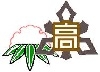
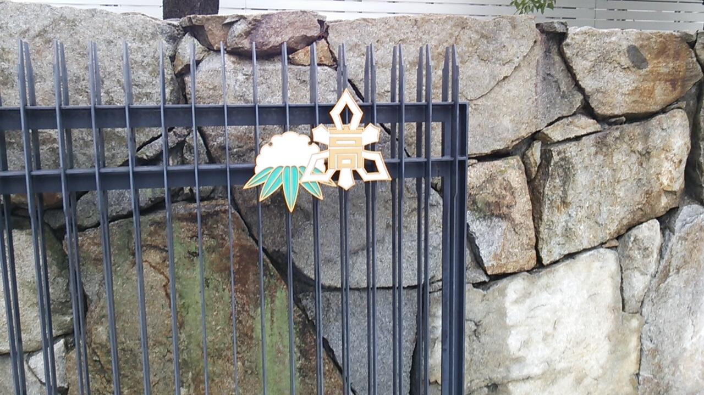
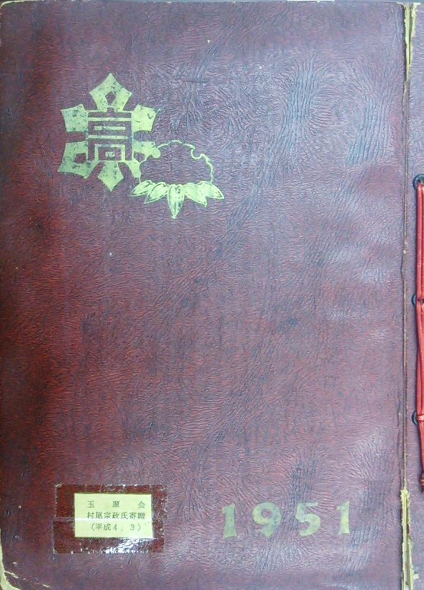
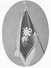
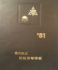
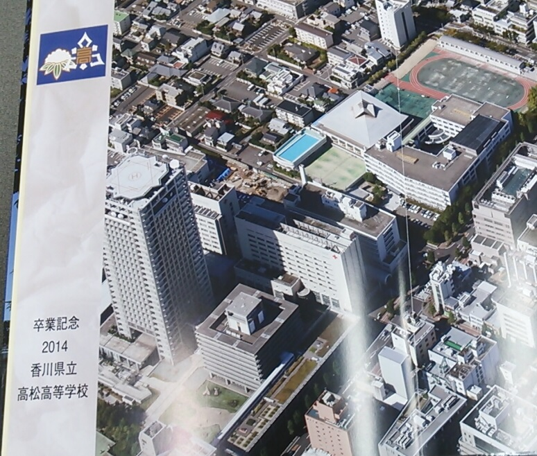

男子校章と女子校章を組合わせた校章

また、女子の校章は明治34年にデザインされ、雪の白さは乙女の「純潔」を、雪にたわむ笹の姿は「忍耐」を表し、戦後高高と高女が統合した後も校章として使用されています。
このように高松高校の校章は男女が別々のデザインです。

南門の扉
ところが、それがいつから正式な高高の校章として使われるようになったのかははっきりしません。
そこで、その歴史を調べてみました。
1951年(S26)の高高新聞
昭和26年4月20日付高高新聞には「当面、校内に２種の校章を使用」としているだけで、組合わせた校章のことはまったく書かれていません。それゆえ、そのころは組合わせた校章は一般的でなかったと思われます。1951年(S26)から1964年(S39)までの卒業アルバム

1951年(S26)の
卒業アルバム 昭和26年卒の川田景洋氏は、「第１回のアルバムの表紙に、女子が依然として雪持笹を使用していたので、これと三角形の男子の校章とを組み合わせてはという事で、最後にそうしました。」と述べられています（「玉翠19号」）。
「第１回のアルバム」というのは、男女統合後の第１回の卒業アルバム（右の写真）のことと思われますので、この頃（昭和26年3月）が組合わせた校章が使われた最初のようです。
もっとも、このときのデザインは、男子校章と女子校章の関係が現在と逆になっています。
この現在と左右が逆になったデザインは、1964年(S39)の卒業アルバムまで使われていました。
校旗のデザイン

このときの校旗について杉谷輝雄氏は、「校旗となると男子と女子のいずれかが使用している校章となりますが、それぞれ伝統ある名門校だけになかなか決定しなかったのじゃないかと思います。ただ、異なった校章を使用しても不自然でないのですから、両方を組合せた物が生れてくるのは当然の事ですし、学校当局も略旗，生徒手帳其の他学校関係の標示には男女の校章を組合わせた図案を使用しています。」（玉翠70周年記念号）と述べられています。
したがって、このころには略旗や生徒手帳には組合わせた校章を使用していたようです。
ただ、「略旗などの標示」としているので、正式の校章としては位置づけられていなかったと思われます。
1965年(S40)以降の卒業アルバム

1981年(S56卒)の
卒業アルバム
したがって、この時点ではまだ、組合わせた校章は正式の校章としては取り扱われていなかったと考えられます。
しかし、1982年(S57)、1984年(S59)、1987年(S62)の卒業アルバムでは、組合わせた校章を刺繍した校旗の写真を掲載する形で、組合わせた校章を表示するようになりました。

2014年(H26)の
卒業アルバム
したがって、1982年(S57)ころ、あるいは遅くとも1988年(S63)には、組合わせた校章が正式の校章として位置付けられたと思われます。
資料1
校章は現状維持
（昭和26年4月20日付高高新聞より）
共学実施後、もはや３年をむかえ、すでに制服も定まり、新校舎増設によって本校のみでの授業も実施されようとしている今日、まだ完全に統一されていなものに校章校歌がある。
即ち、校章においては男子は旧高松高校の校章、女子は旧高松高女のバッヂを現在用いているが、両校共古い伝統があり、すでに昨年調査した結果約８割の者が現在のままで、と希望している所から、特別支障のない限り校内には二種の校章が使用される。
資料2
統合の頃
川田景洋 昭和26年卒（「玉翠19号」より））
第1回のアルバム。これは500円か550円で出来たと思います。
表紙をどうするか、校章はどうするか。女子が依然として雪持笹を使用していましたので、これと三角形の男子の校章とを組み合わせてはという事で、最後にそうしてしまいました。
これについてはいささか責任みたいなものを感じていました所、5年前、70周年の記念誌に、新しく出来た校旗の紹介のページで私達が考えた合作の校章が刺繍されていたので、安心いたしました。
資料3
校旗作製にあたり
杉谷輝雄（「玉翠創立70周年記念誌」より）
七十周年記念行事打合せ会の席で記念行事の一つとして校旗の作製をする事になり、其の仕事を三部会の卒業生からなる委員と私とで御世話する事になりましたが、何といっても県下の名門校が合併したのですから新しい校旗となるとなかなかむつかしい事です。
とくに、県女時代の同窓生の校章に対する愛着、母校愛は高中時代の同窓生では想像がつかない事です｡
男子の場合は昔も今も高中（高高）を足がかりとして進学するものが大部分でしたが，女子は現在ほどは進学は希望せず県女で終る方が多かった様に記憶しています。其の為に女学校時代からの組織が充分であり，良妻，賢母の象徴である雪持ち笹に対する愛着は私が書かなくてもわかっていただけると思います。
校旗となるとそれぞれ伝統有る名門校だけになかなか決定しなかったのじゃないかと思います。
一つの学校で校章がそれもぜんぜん形の異なったものを使用して別に不自然でもなんでもないのですから，校旗としても両方を組合せた物が生れてくるのは当然の事ですし、学校当局も略旗，又は生徒手帳其の他学校関係の標示には前記のような図案を使用しています。